<!doctype html>
<html lang='es'>
<head>
<meta charset='utf-8'>
<meta name='viewport' content='width=device-width,initial-scale=1'>
<title>Tema 4 Los animales y los microorganismos</title>
<style>body{font-family:system-ui,-apple-system,Segoe UI,Roboto,Ubuntu,Cantarell,Noto Sans,sans-serif;line-height:1.5;max-width:980px;margin:24px auto;padding:0 16px;}
    h1,h2,h3{line-height:1.2}
    img{max-width:100%;height:auto}
    .callout{border-left:4px solid #444;background:#f6f6f6;padding:12px 14px;margin:12px 0}
    .muted{color:#666;font-size:0.9em}</style>
</head>
<body>
<h1>Tema 4 Los animales y los microorganismos</h1>
<p class='muted'>Página 138</p>
<p>Qué hay</p>
<h3>Tema 4 Los animales y los microorganismos</h3>
<p>en nuestro</p>
<div class='callout'>
<p>En conjunto, los animales y los microbios integran el grupo de seres vivos</p>
<p>más numeroso en la naturaleza del planeta Tierra.</p>
</div>
<p>planeta</p>
<h3>ara empezar…</h3>
<p>Observa detenidamente las siguientes ilustraciones.</p>
<div class='callout'>
<p>vaca</p>
<p>medusa</p>
<p>mantis religiosa</p>
<p>perro</p>
<p>esponja tubular</p>
<p>árbol</p>
<p>maíz</p>
<p>zacate</p>
<p>anémona</p>
<p>gallina</p>
<p>camello</p>
<p>coral</p>
</div>
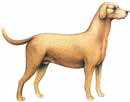
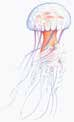
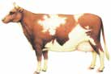
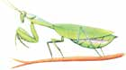


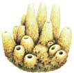


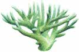

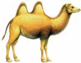
<p>UNIDAD 2</p>
<p>137</p>
<p class='muted'>Página 139</p>
<p>¿Conoces todos los seres vivos de las ilustraciones? ¿Algunos se</p>
<p>Nuestro</p>
<p>encuentran en tu comunidad? Sobre el dibujo, marca con una ✓ azul los</p>
<p>planeta,</p>
<p>la Tierra</p>
<p>que son animales y con una ✓ roja las plantas.</p>
<p>Contesta las siguientes preguntas.</p>
<p>¿Cuántos animales encontraste? </p>
<p>¿Y cuántas plantas? </p>
<div class='callout'>
<p>En grupo revisen sus respuestas. Comenten si tuvieron dificultad para</p>
<p>clasificar alguno de los seres vivos. Responde lo siguiente.</p>
</div>
<p>¿Todos estuvieron de acuerdo con el grupo al que pertenecen los</p>
<p>organismos con los números 2, 5, 9 y 12? Explica tu respuesta.</p>
<p></p>
<p></p>
<p></p>
<p></p>
<p></p>
<p></p>
<p></p>
<p>abías</p>
<p>que...</p>
<p>Existe un tipo de esponja que algunas personas usan para bañarse, es el</p>
<p>esqueleto de un animal de mar. Cuando ya no existe su tejido vivo, se lava,</p>
<p>se blanquea y se corta en pedazos para su venta. Las esponjas, al igual que</p>
<p>UNIDAD 2</p>
<p>las medusas, las anémonas y los corales son animales.</p>
<p>138</p>
<p class='muted'>Página 140</p>
<p>Los animales y el ser humano</p>
<p>Qué hay</p>
<p>en nuestro</p>
<p>planeta</p>
<p>Desde hace millones de años, los humanos hemos convivido con los</p>
<p>animales de varias maneras. Escribe en tu cuaderno alguna anécdota</p>
<p>personal o una canción que trate acerca de lo importante que haya sido</p>
<p>un animal para una persona.</p>
<div class='callout'>
<p>Intercambien sus textos. Comenten lo siguiente: Creen que es poco</p>
<p>frecuente que los animales ayuden a los humanos? Discutan sus ideas.</p>
</div>
<p>Lean el siguiente texto.</p>
<p>El halcón y el rey</p>
<p>(fragmento)</p>

<h2>E</h2>
<p>ntre los indígenas tseltales de Chiapas se cuenta que existió un rey que</p>
<p>salió a cazar una liebre en compañía de su halcón. Después de mucho</p>
<p>andar, vio que no llevaba agua para beber, pero decidió seguir adelante,</p>
<p>UNIDAD 2</p>
<p>hasta que encontró la liebre y la mató; el halcón voló y se la trajo al rey,</p>
<p>139</p>
<p class='muted'>Página 141</p>
<p>quien la preparó para comer, pero con la garganta seca no podía pasar la</p>
<p>Nuestro</p>
<p>carne, así que fue a buscar agua. Encontró una peña húmeda de la que caía</p>
<p>planeta,</p>
<p>la Tierra</p>
<p>una gotita que pacientemente recogió en su copa. Cuando estaba a punto</p>
<p>de llenarse, el halcón la volteó de un aletazo, derramando el agua. El rey se</p>
<p>enojó pero volvió a llenar la copa; tres veces lo hizo y tres veces la derramó</p>
<p>el animal. El rey lo mató.</p>
<p>Luego se dio cuenta de que en la peña había una víbora.</p>
<p>—¡Por eso no me dejaba tomar el agua el halcón —dijo el rey—, iba yo</p>
<p>a morir envenenado!</p>
<p>De regreso en su casa, pensaba: “¿Por qué lo maté si me estaba haciendo</p>
<p>un bien?”</p>
<p>De tanta tristeza, el rey se mató.</p>
<p>¿Conocías este cuento? Coméntalo en grupo. ¿Cómo te relacionas con</p>
<p>los animales? Contesta en tu cuaderno esta pregunta y escribe un texto</p>
<p>breve acerca de lo que te hizo pensar el cuento.</p>
<p>Los animales forman el grupo de seres</p>
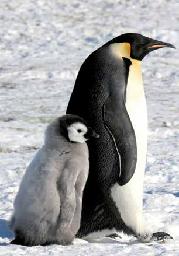
<p>vivos más numeroso del planeta. Algunos</p>
<p>de ellos no son fáciles de identificar porque</p>
<p>su apariencia y su comportamiento son</p>
<p>semejantes a los de otros seres vivos. Sólo</p>
<p>interesándonos en conocerlos podremos</p>
<p>distinguirlos mejor y apreciar que, muchos</p>
<p>de ellos, frecuentemente son nuestra ayuda</p>
<p>y nuestra compañía. Los humanos también</p>
<p>somos animales, pero muchas personas se</p>
<p>consideran superiores al resto de los animales</p>
<p>y algunas hasta creen que no lo somos.</p>
<p>Martha de Jong Lantink. fotopedia</p>
<p>Lo cierto es que lo somos, pero especiales,</p>
<p>porque tenemos la capacidad de darnos</p>
<p>cuenta de nuestras acciones y esto es una</p>
<p>UNIDAD 2</p>
<p>gran responsabilidad.</p>
<p>140</p>
<p class='muted'>Página 142</p>
<p>Lee las siguientes noticias.</p>
<p>Qué hay</p>
<p>en nuestro</p>
<div class='callout'>
<p>Un ave llamada Alca impenis desapareció del planeta, exterminada por el</p>
<p>ser humano. En el siglo xix usaron sus plumas para rellenar almohadas y</p>
<p>almohadones.</p>
<p>a</p>
<p>Desde febrero de 1997, los científicos son capaces de crear vida por medios</p>
<p>artificiales, utilizando óvulos de una oveja viva, y están pensando en crear</p>
<p>seres humanos de la misma manera.</p>
<p>a</p>
<p>Los comerciantes están engordando a los animales con sustancias químicas</p>
<p>para venderlos más rápidamente. Esas sustancias perjudican a los animales y</p>
<p>también a quienes se los comen.</p>
</div>
<p>planeta</p>
<div class='callout'>
<p>Comenten estas noticias. Habían oído algo al respecto? Puede</p>
<p>el ser humano sentirse orgulloso por estos hechos? Qué sabemos</p>
<p>acerca de lo que la humanidad ha hecho en bien de toda la vida en el</p>
<p>planeta? Discutan sus ideas.</p>
</div>

<p>ara</p>
<p>Consulta en tu Revista el texto “Cómo nos relacionamos con los</p>
<p>saber</p>
<p>animales&quot;.</p>
<p>más...</p>
<div class='callout'>
<p>Después, coméntalo en el Círculo de estudio.</p>
</div>
<p>Lee con atención el siguiente texto.</p>
<h2>H</h2>
<p>abía una vez una rana que quería ser una rana auténtica y todos los días se</p>
<p>esforzaba en ello. Al principio se miraba largamente al espejo buscando</p>
<p>UNIDAD 2</p>
<p>su ansiada autenticidad. Luego pensó que su propio valor estaba en la opinión</p>
<p>141</p>
<p class='muted'>Página 143</p>
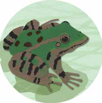
<p>de la gente y comenzó a hacer todo para buscar la aprobación</p>
<p>Nuestro</p>
<p>y el reconocimiento de los demás. Se dio cuenta de que lo</p>
<p>planeta,</p>
<p>la Tierra</p>
<p>que más admiraban de ella eran sus piernas, de manera que</p>
<p>hizo mucho ejercicio y, dispuesta a cualquier cosa para que</p>
<p>la consideraran una rana auténtica, se dejó arrancar las ancas,</p>
<p>y los otros la comían, pero ella alcanzó a oír con amargura</p>
<p>cuando decían: “¡Qué buena rana, parece pollo!”</p>
<p>Augusto Monterroso, escritor guatemalteco.</p>
<p>¿Qué quiere decirnos esta historia? ¿Logró la rana lo que se proponía?</p>
<p>¿Encuentras alguna utilidad en este tipo de narraciones?</p>
<p>¿Por qué crees que Monterroso utilizó a un animal como personaje</p>
<p>central de su historia?</p>
<p></p>
<p></p>
<p></p>
<p>¿Conoces otra historia, dicho, refrán o conseja popular que se valga de un</p>
<p>animal para transmitirnos alguna enseñanza? Escríbelo en tu cuaderno.</p>
<p>El ser humano ha sido capaz de apreciar la belleza de los animales.</p>
<p>Muchas religiones del pasado veneraron al águila, al halcón, al tigre y al</p>
<p>leopardo, entre otros animales. Antes y ahora, las personas han querido</p>
<p>poseer las cualidades de fuerza, astucia, ligereza y coraje que ven en otros</p>
<p>seres vivos del reino animal. También han asociado a algunos de ellos con</p>
<p>la sabiduría, por lo que por medio de personajes y de sus experiencias,</p>
<p>muestran al resto de la humanidad enseñanzas y consejos para vivir</p>
<p>mejor. La humanidad ha establecido muchas formas de relación con los</p>
<p>UNIDAD 2</p>
<p>animales del planeta, por ejemplo, la ayuda, la compañía y protección</p>
<p>142</p>
<p class='muted'>Página 144</p>
<p>mutuas. Otras formas de convivencia han llevado a las personas a invadir</p>
<p>Qué hay</p>
<p>el ambiente natural, con graves daños para la vida animal. Es importante</p>
<p>en nuestro</p>
<p>planeta</p>
<p>reflexionar que el ser humano es también un animal y que los otros</p>
<p>animales tienen derechos que también debemos respetar.</p>
<div class='callout'>
<p>Escribe en tu cuaderno una lista de tres animales que forman parte</p>
<p>de tu vida diaria o de tu comunidad. Al lado de cada uno escribe lo que</p>
<p>sepas acerca de cómo nacen, de qué se alimentan y en qué ambiente</p>
<p>se desarrollan mejor.</p>
</div>
<p>Observa el siguiente conjunto de animales.</p>
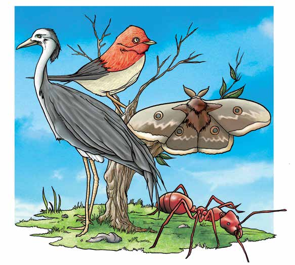
<p>UNIDAD 2</p>
<div class='callout'>
<p>Cómo los clasificarías? Escribe tu respuesta en tu cuaderno.</p>
</div>
<p>143</p>
<p class='muted'>Página 145</p>
<div class='callout'>
<p>Intercambia tus resultados con otras personas del Círculo de estudio</p>
<p>y discutan sus respuestas.</p>
</div>
<p>Nuestro</p>
<p>planeta,</p>
<p>la Tierra</p>
<p>ara</p>
<p>Consulta en tu Revista el texto “La clasificación de los animales&quot;.</p>
<p>saber</p>
<p>más...</p>
<div class='callout'>
<p>Elabora en tu cuaderno un texto con lo que te pareció más importante</p>
<p>del texto anterior.</p>
</div>
<p>ecordemos que...</p>
<p>A lo largo del tiempo, los animales se han clasificado de diferentes maneras.</p>
<p>Actualmente algunos de los grupos en los que se pueden incluir los animales</p>
<p>que se clasificaron en las actividades anteriores son los siguientes: invertebrados,</p>
<p>peces, reptiles, anfibios, aves y mamíferos. Esta clasificación nos ayuda a</p>
<p>distinguir sus principales características, a conocer más acerca de su forma de</p>
<p>vida y a apreciarlos mejor.</p>
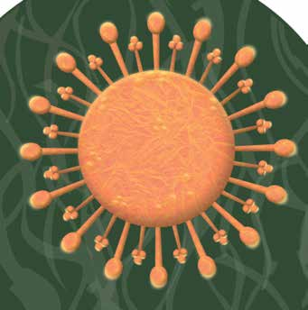
<p>Los microorganismos</p>
<p>Los microorganismos son organismos que</p>
<p>no se pueden observar a simple vista. Para</p>
<p>observarlos se requiere usar un micro-</p>
<p>scopio. Algunos son benéficos y otros</p>
<p>son perjudiciales. Los microorganismos</p>
<p>que causan enfermedades son conocidos</p>
<p>como microbios patógenos. Es importante</p>
<p>conocerlos porque con ellos convivimos</p>
<p>UNIDAD 2</p>
<p>más de lo que imaginamos.</p>
<p>144</p>
<p class='muted'>Página 146</p>
<h3>Observa las siguientes imágenes.</h3>
<p>Qué hay</p>
<p>en nuestro</p>

<p>planeta</p>
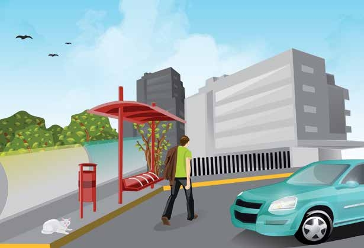

<p>UNIDAD 2</p>
<p>145</p>
<p class='muted'>Página 147</p>
<p>¿Qué tipo de seres vivos observas en las imágenes anteriores? ¿Te resulta</p>
<p>Nuestro</p>
<p>fácil reconocerlos?</p>
<p>planeta,</p>
<p>la Tierra</p>
<p>En estas imágenes, ¿pudiste identificar algunos microorganismos o</p>
<p>microbios? Explica tu respuesta.</p>
<div class='callout'>
<p>Pregunta a tus compañeros qué contestaron en este ejercicio y</p>
<p>discutan sus ideas. Luego, realiza la siguiente actividad:</p>
</div>
<p>Busca un lugar con agua estancada. Recoge, en un frasco, un poco de</p>
<p>esa agua y fíltrala o cuélala, usando como colador un pedazo de tela de</p>
<p>tejido apretado. Responde en tu cuaderno las siguientes preguntas:</p>
<ul>
<li>¿Cómo es el agua que colaste?</li>
<li>¿Qué quedó en la tela?</li>
<li>¿Reconoces alguna forma de ser vivo en la tela?</li>
</ul>
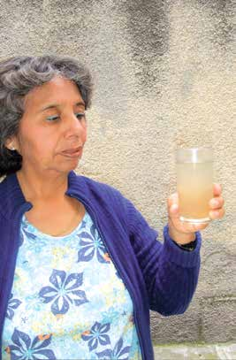

<p>UNIDAD 2</p>
<p>146</p>
<p class='muted'>Página 148</p>
<p>En los residuos que observaste en la tela hay microbios que viven en el</p>
<p>Qué hay</p>
<p>agua, pero no los puedes ver por su tamaño tan pequeño. ¿Cómo será</p>
<p>en nuestro</p>
<p>planeta</p>
<p>un microbio? ¿Cómo te lo imaginas? ¿Qué forma tendrá? ¿Qué color?</p>
<p>Dibújalo.</p>
<div class='callout'>
<p>Comenten: qué saben acerca de los microbios?, qué efectos causan</p>
<p>en las personas y en los otros animales?</p>
</div>
<p>UNIDAD 2</p>
<p>147</p>
<p class='muted'>Página 149</p>
<div class='callout'>
<p>Pide a dos personas (familiares, amigos o vecinos) que te digan en</p>
<p>qué los perjudican y en qué los benefician los microorganismos. Si es</p>
<p>necesario, explícales qué son. Escribe en tu cuaderno dos listas con</p>
<p>las respuestas que te den. También anota tu propia opinión.</p>
</div>
<p>Nuestro</p>
<p>planeta,</p>
<p>la Tierra</p>
<p>¿Qué resultados obtuviste? ¿Alguna de las listas resultó más larga que</p>
<p>la otra? ¿La gente conoce algún beneficio de los microorganismos?</p>
<p>Comenta en el Círculo de estudio tu experiencia. Intercambien sus listas.</p>
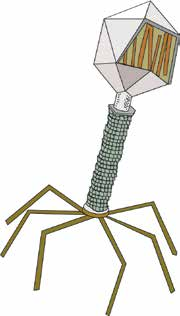
<p>Observa las ilustraciones.</p>
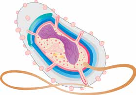
<p>Bacteriófago</p>
<p>Bacteria cilíndrica</p>
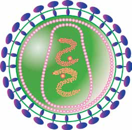

<p>UNIDAD 2</p>
<p>Virus de rabia</p>
<p>Virus de sida</p>
<p>148</p>
<p class='muted'>Página 150</p>
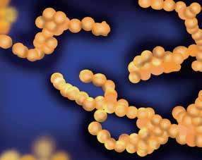
<p>Qué hay</p>
<p>en nuestro</p>
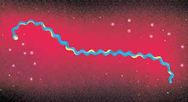
<p>planeta</p>
<p>Bacteria en espiral</p>
<p>Bacteria esférica</p>

<p>Virus de herpes</p>
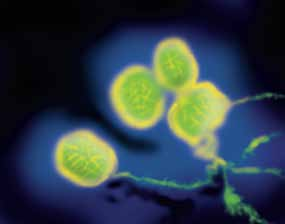
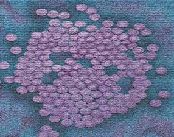
<p>UNIDAD 2</p>
<p>Virus de viruela</p>
<p>Virus de polio</p>
<p>149</p>
<p class='muted'>Página 151</p>
<div class='callout'>
<p>Comenten en grupo. cómo imaginaban la forma de los micro-</p>
<p>organismos?, se parece alguno de los microorganismos de la</p>
<p>ilustración anterior al que dibujaste en la página anterior?</p>
</div>
<p>Nuestro</p>
<p>planeta,</p>
<p>la Tierra</p>
<p>Mucha gente tiene la impresión de que todos los microorganismos son</p>
<p>dañinos. Esto se debe a que muchas enfermedades provocadas por un hongo,</p>
<p>un virus o una bacteria han sido causa de desastres para la humanidad.</p>
<p>Pero es necesario aclarar que sólo 250 tipos de microorganismos,</p>
<p>aproximadamente, entre todos los que se conocen, son los que dañan la</p>
<p>vida humana.</p>
<div class='callout'>
<p>En un papel grande, hagan un cuadro donde anoten las enfermedades</p>
<p>que más padecen las personas de su casa. Señalen también cómo las</p>
<p>curan y, si saben, qué las causa. Vean el ejemplo.</p>
</div>
<div class='callout'>
<p>Enfermedad</p>
<p>¿Cómo se cura?</p>
<p>¿Qué la ocasiona?</p>
</div>
<div class='callout'>
<p>Tomando muchos</p>
<p>Un virus que se contagia por el</p>
<p>Gripe</p>
<p>líquidos, vitamina C</p>
<p>estornudo o tos de un enfermo.</p>
<p>y guardando reposo.</p>
</div>
<p>Pidan la ayuda de su asesor; si es necesario, busquen más información</p>
<p>en el dispensario médico y con los curanderos de la comunidad.</p>
<p>abías</p>
<p>que...</p>
<p>En la conquista de América, los microbios patógenos que trajeron los españoles</p>
<p>fueron la causa de la viruela, el tifo, la lepra, enfermedades pulmonares,</p>
<p>estomacales, el tétanos, la fiebre amarilla y la caries. Los indios caían muertos</p>
<p>porque eran enfermedades nuevas para las que sus cuerpos no tenían ningún</p>
<p>UNIDAD 2</p>
<p>tipo de defensa o anticuerpo.</p>
<p>150</p>
<p class='muted'>Página 152</p>
<p>Una de las mejores muestras de que los microbios pueden ayudarnos</p>
<p>Qué hay</p>
<p>es que con algunos de ellos se pueden combatir las enfermedades que</p>
<p>en nuestro</p>
<p>planeta</p>
<p>causan. Un ejemplo de esto es la penicilina.</p>
<p>¿Sabes cuándo y para qué es útil la penicilina? Escríbelo brevemente.</p>
<p></p>
<p></p>
<p></p>
<p></p>
<p></p>
<p></p>
<p></p>
<p></p>
<p>Los microorganismos también viven sobre nuestro cuerpo y dentro de</p>
<p>él. Los que nos benefician son los que ayudan a nuestro organismo a</p>
<p>funcionar mejor. Por ejemplo, algunos de ellos viven en nuestro intestino y</p>
<p>contribuyen a la digestión de los alimentos.</p>

<p>Los microorganismos también son</p>
<p>componentes de la naturaleza.</p>
<p>United States Department of Health and Human Services. wikipedia</p>
<p>Muchos de ellos viven en el am-</p>
<p>biente; otros viven dentro y sobre</p>
<p>los cuerpos de plantas y animales.</p>
<p>Casi toda la gente teme a estos</p>
<p>organismos y muy pocos conocen</p>
<p>los beneficios que estos seres vivos</p>
<p>aportan al planeta.</p>
<p>UNIDAD 2</p>
<p>SalmonellaNIAID</p>
<p>151</p>
<p class='muted'>Página 153</p>
<p>En el tema 3, “La diversidad del mundo vivo”, se explicó que los organismos</p>
<p>Nuestro</p>
<p>que llamamos microbios no pueden ser clasificados como animales ni</p>
<p>planeta,</p>
<p>la Tierra</p>
<p>como plantas. ¿Recuerdas cuál es la razón? Escríbela.</p>
<p></p>
<p></p>
<p></p>
<p></p>
<p></p>
<p></p>
<p>Para conocer a los microorganismos fue necesario inventar el microscopio,</p>
<p>un instrumento con lentes muy potentes que aumentan miles de veces el</p>
<p>tamaño de las imágenes.</p>
<p>Así verías uno de tus cabellos a través del microscopio.</p>
<p>Los microorganismos son muy diferentes en su forma, en la manera como</p>
<p>consiguen su alimento y en la forma en que se relacionan con los demás</p>
<p>seres vivos. También difieren en el modo en que viven en este planeta.</p>


<p>UNIDAD 2</p>
<p>152</p>
<p class='muted'>Página 154</p>
<p>abías</p>
<p>que...</p>
<p>Qué hay</p>
<p>en nuestro</p>
<p>planeta</p>
<p>Muchos microorganismos, en alguna fase de su vida, se reproducen acelera-</p>
<p>damente y son capaces de tener hijos a los 20 minutos, nietos a los 40</p>
<p>minutos y biznietos a los 60. En condiciones favorables, al cabo de tres</p>
<p>horas, un solo microorganismo habrá dado lugar a unos 1000 descendientes.</p>
<p>En algo se parecen los diferentes microorganismos: son capaces de vivir</p>
<p>en casi todos los lugares del planeta. Se han encontrado bacterias en el agua,</p>
<p>en el suelo, en los seres vivos, en los alimentos y también en el aire.</p>
<p>Pueden vivir en lugares donde otros seres lo harían con dificultad o morirían.</p>
<p>Por ejemplo, en las regiones heladas cercanas a los polos de la Tierra o en los</p>
<p>alrededores de los géiseres, que son chorros de agua potente y caliente que</p>
<p>brotan de la Tierra.</p>
<p>En cada uno de los sitios que habitan producen efectos en el medio ambiente:</p>
<p>a veces lo dañan, pero casi siempre lo benefician.</p>
<p>ara</p>
<p>saber</p>
<p>Consulta en tu Revista el texto “Los microbios y la vida en el planeta”.</p>
<p>más...</p>
<div class='callout'>
<p>Piensa en lo siguiente: si el planeta ha sido poblado por tantos</p>
<p>seres vivos, durante millones de años, dónde están los restos de</p>
<p>sus organismos muertos?, por qué la Tierra no se ha cubierto de</p>
<p>cadáveres, de vegetación muerta y de desechos como los excrementos?</p>
<p>Escribe lo que piensas.</p>
</div>
<p></p>
<p></p>
<p></p>
<p></p>
<p>UNIDAD 2</p>
<p></p>
<p>153</p>
<p class='muted'>Página 155</p>
<div class='callout'>
<p>Intercambia los resultados con integrantes del Círculo de estudio y</p>
<p>complementen sus respuestas.</p>
</div>
<p>Nuestro</p>
<p>planeta,</p>
<p>la Tierra</p>
<p>abías</p>
<p>que...</p>

<p>Se calcula que la cantidad de bacterias</p>
<p>que hay en la boca de una persona es</p>
<p>mayor que el número de toda la gente</p>
<p>que ha vivido sobre la Tierra.</p>
<p>En una cucharada de agua no con-</p>
<p>taminada hay alrededor de 1 millón de</p>
<p>bacterias; en una gota de agua de charco</p>
<p>podría haber más de 50 millones de bacte-</p>
<p>rias; y en una cucharada de tierra podrían</p>
<p>encontrase viviendo varios billones de estos</p>
<p>organismos.</p>
<p>ecordemos que...</p>
<p>Los microorganismos son los seres vivos más pequeños del planeta. Los más</p>
<p>conocidos por la mayoría de la gente son los virus, algunos tipos de hongos y las</p>
<p>bacterias. Algunos microbios nos dañan, pero muchos otros nos benefician.</p>
<p>Por ejemplo, los microbios se usan para hacer pan, fabricar medicamentos,</p>
<p>producir alcohol y otros productos. En el planeta, los microorganismos</p>
<p>también son necesarios para enriquecer el aire y el suelo, y para limpiar su</p>
<p>superficie de los cadáveres y las sustancias en descomposición.</p>
<p>UNIDAD 2</p>
<p>154</p>
<p class='muted'>Página 156</p>
<p>uestros avances</p>
<p>Qué hay</p>
<p>en nuestro</p>
<p>planeta</p>
<ul>
<li>1. Después de reconocer los diferentes componentes de la naturaleza</li>
</ul>
<p>y cómo se relacionan unos con otros, ¿cuál crees que es el lugar del</p>
<p>ser humano en el planeta?</p>
<p></p>
<p></p>
<p></p>
<p></p>
<ul>
<li>2. ¿Qué características te parecen importantes para distinguir a los</li>
</ul>
<p>siguientes seres vivos? ¿Cómo son?</p>

<p>Ser humano:</p>
<p></p>
<p></p>
<p></p>
<p>Maíz:</p>
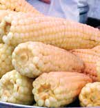
<p></p>
<p></p>
<p></p>
<p>Hongo:</p>

<p></p>
<p></p>
<p>UNIDAD 2</p>
<p></p>
<p>155</p>
<p class='muted'>Página 157</p>
<ul>
<li>3. ¿Cuáles son los componentes de la naturaleza que necesitan para</li>
</ul>
<p>Nuestro</p>
<p>vivir el ser humano, el hongo y el maíz? Escríbelos por separado.</p>
<p>planeta,</p>
<p>la Tierra</p>
<p></p>
<p></p>
<p></p>
<p></p>
<p></p>
<p></p>
<p></p>
<p></p>
<p></p>
<ul>
<li>4. ¿Qué grupos formarías con lo siguiente: un diamante, una manzana,</li>
</ul>
<p>una flor, una piedra pómez, un hielo y un virus? Escríbelos en tu</p>
<p>cuaderno.</p>
<ul>
<li>5. Muchas noticias, revistas y películas tratan acerca de lo que puede</li>
</ul>
<p>pasar a los habitantes de la Tierra si no detenemos su destrucción.</p>
<p>Escribe en tu cuaderno un texto breve acerca de este tema. Puedes</p>
<p>usar las siguientes frases u otras que decidas.</p>
<p>“Si las cosas siguen igual, el futuro del planeta y de la humanidad es...”</p>
<p>“Los animales y las plantas son importantes porque...”</p>
<p>“Hay formas de usar los recursos naturales sin...”</p>
<p>UNIDAD 2</p>
<p>“Lo que yo puedo hacer para proteger la vida en el planeta es...”</p>
<p>156</p>
<p class='muted'>Página 158</p>
<p>¿Qué he aprendido y para qué me sirve?</p>
<p>Qué hay</p>
<p>en nuestro</p>
<p>planeta</p>
<p>Unidad 2. Qué hay en nuestro planeta</p>
<p>Temas:</p>
<ul>
<li>1. Las cosas que nos rodean</li>
<li>2. ¿Qué necesitamos los seres vivos para vivir?</li>
<li>3. La diversidad del mundo vivo</li>
<li>4. Los animales y los microorganismos</li>
</ul>
<p>¿Qué aprendí en esta unidad?</p>
<p></p>
<p></p>
<p></p>
<p>¿Qué debo repasar?</p>
<p></p>
<p></p>
<p></p>
<p>¿Para qué me sirve lo que he aprendido en esta unidad?</p>
<p></p>
<p></p>
<p></p>
<p>UNIDAD 2</p>
<p></p>
<p>157</p>
<p class='muted'>Página 159</p>
<p>UNIDAD 3</p>

<div class='callout'>
<p>¿QUÉ NOS</p>
<p>PROPONEMOS?</p>
<p>•	Reconocer los diferentes tipos</p>
<p>de cambios que ocurren en la</p>
<p>naturaleza y algunas de las</p>
<p>causas que los propician.</p>
<p>•	Identificar los principales</p>
<p>tipos de energía que hay y</p>
<p>su influencia en los cambios</p>
<p>y transformaciones de la</p>
<p>naturaleza.</p>
<p>•	Analizar las consecuencias</p>
<p>que tienen en la naturaleza</p>
<p>y en nuestra vida los cambios</p>
<p>que producimos en nuestro</p>
<p>entorno.</p>
<p>TEMAS</p>
<p>1. La naturaleza es diversa;</p>
<p>sus cambios, también</p>
<p>2. ¿Por qué cambian las</p>
<p>cosas?</p>
<p>3. La energía y su relación</p>
<p>con el cambio</p>
<p>4. Nuestra influencia en los</p>
<p>cambios de la naturaleza</p>
<p>y de la sociedad</p>
<p>Nuestros avances</p>
<p>¿Qué he aprendido y para qué</p>
<p>me sirve?</p>
</div>
<p class='muted'>Página 160</p>
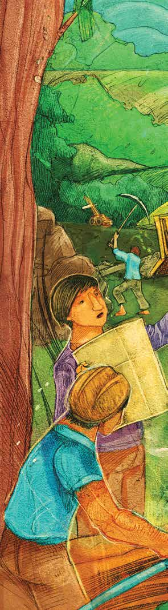
<h2>La naturaleza</h2>
<h2>y la sociedad</h2>
<h2>se transforman</h2>
<h3>Los seres vivos y las cosas que conocemos no</h3>
<p>Nosotros</p>
<p>permanecen siempre iguales.</p>
<p>cambiamos, la Tierra ha cambiado y sigue cam-</p>
<p>biando, el clima cambia, la punta de un lápiz</p>
<p>se hace pequeña o se quiebra, un cerillo arde y</p>
<p>se consume, un volcán que parecía dormido,</p>
<p>Si</p>
<p>de pronto despierta y entra en actividad.</p>
<p>aprendemos más sobre las causas y consecuen-</p>
<p>cias de los cambios en la naturaleza, podremos</p>
<p>tener la oportunidad de utilizar mejor nues-</p>
<p>tros recursos.</p>
<p class='muted'>Página 161</p>
<div class='callout'>
<p>La naturaleza es diversa; sus</p>
</div>
<p>Nuestro</p>
<p>planeta,</p>
<p>cambios, también</p>
<p>Tema</p>
<p>la Tierra</p>
<div class='callout'>
<p>Los cambios que existen en la naturaleza son diversos; esto se debe al</p>
<p>tiempo que tardan en realizarse, a las diferentes causas que los producen,</p>
<p>a la forma y características de los materiales con que están hechas las</p>
<p>cosas. Conozcamos mejor las características de los cambios que ocurren</p>
<p>en la naturaleza de la cual formamos parte.</p>
</div>
<p>ara empezar…</p>
<p>Todo cambia [fragmento]</p>
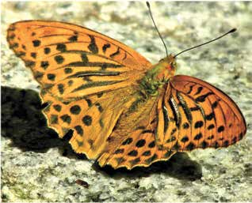
<p>Cambia lo superficial.</p>
<p>Cambia también lo profundo.</p>
<p>Cambia el modo de pensar.</p>
<p>Cambia todo en este mundo.</p>
<p>Cambia el clima con los años.</p>
<p>Cambia el pastor su rebaño.</p>
<p>Y así como todo cambia.</p>
<p>Que yo cambie no es extraño.</p>
<p>Julio Numhauser</p>
<p>¿Estás de acuerdo en lo que expresa la canción?</p>
<p>Sí</p>
<p>No</p>
<p>¿Por qué?</p>
<p></p>
<p></p>
<p>UNIDAD 3</p>
<p></p>
<p>160</p>
<p class='muted'>Página 162</p>
<p>Escribe algunos cambios que observas todos los días. Fíjate en los ejemplos.</p>
<p>La</p>
<p>.</p>
<p>naturaleza</p>
<p>y la</p>
<p>Cuando el día se hace de noche; el cambio de clima;</p>
<p></p>
<p>sociedad se</p>
<p>transforman</p>
<p>cuando los alimentos se cuecen…</p>
<p></p>
<p></p>
<p></p>
<p></p>
<p></p>
<p></p>
<p></p>
<p></p>
<p></p>
<p></p>
<p></p>
<p></p>
<p></p>
<p></p>
<p></p>
<p></p>
<p></p>
<p>Hay cambios que podemos observar con facilidad: un jarrón que se cae y</p>
<p>se rompe en pedazos, la humedad de la tierra cuando llueve, el movimiento</p>
<p>UNIDAD 3</p>
<p>de las hojas de los árboles cuando hay viento; pero otros no.</p>
<p>161</p>
<p class='muted'>Página 163</p>
<p>Observa las siguientes ilustraciones.</p>
<p>Nuestro</p>
<p>planeta,</p>
<p>la Tierra</p>


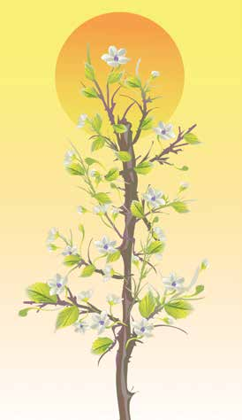


<p>CO2</p>
<p>¿Cuál de las ilustraciones muestra cambios que no podemos observar a</p>
<p>simple vista?</p>
<p></p>
<p></p>
<p></p>
<p></p>
<p></p>
<p></p>
<p>UNIDAD 3</p>
<p></p>
<p>162</p>
<p class='muted'>Página 164</p>
<p>¿Por qué?</p>
<p>La</p>
<p>naturaleza</p>
<p></p>
<p>y la</p>
<p>sociedad se</p>
<p></p>
<p>transforman</p>
<p></p>
<p></p>
<p></p>
<p></p>
<p></p>
<p></p>
<p></p>
<p></p>
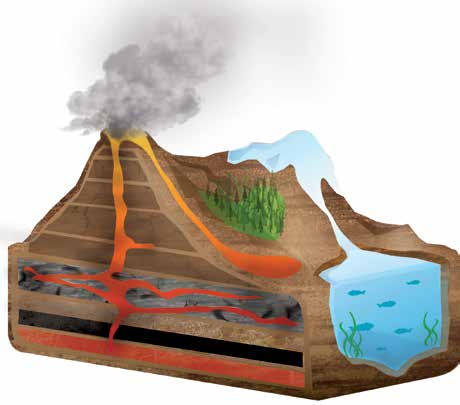
<p>Hay cambios que no podemos percibir a</p>
<p>través de los órganos de nuestros sentidos;</p>
<p>detectarlos requiere del uso de algunos proce-</p>
<p>dimientos e instrumentos especiales.</p>
<p>Existen otros cambios que, por la velocidad</p>
<p>en que se van dando, no podemos darnos</p>
<p>cuenta de forma inmediata que</p>
<p>ocurren. Tal es el caso de la</p>
<p>transformación permanente</p>
<p>del paisaje de nuestro planeta,</p>
<p>la Tierra.</p>
<p>UNIDAD 3</p>
<p>Actividad que ocurre en el interior de un volcán.</p>
<p>163</p>
<p class='muted'>Página 165</p>
<p>Observa las siguientes imágenes.</p>
<p>Nuestro</p>
<p>planeta,</p>
<p>la Tierra</p>


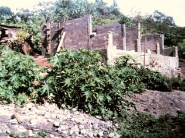


<p>UNIDAD 3</p>
<p>164</p>
<p class='muted'>Página 166</p>
<div class='callout'>
<p>Cuál de los cambios representados lleva más tiempo en realizarse?</p>
<p>Qué cambia en cada caso? El volumen, el aspecto, la forma, el</p>
<p>color? Discute con otras personas del Círculo de estudio y escribe</p>
<p>las respuestas a las preguntas anteriores en tu cuaderno.</p>
</div>
<p>La</p>
<p>naturaleza</p>
<p>y la</p>
<p>sociedad se</p>
<p>transforman</p>
<p>Hay cambios en la naturaleza que no podemos observar tan fácilmente, tal</p>
<p>es el caso del agua; en su fluir, el agua se congela, se evapora, se mezcla</p>
<p>con muchas otras sustancias, como la sal, con materias como el papel y con</p>
<p>cuerpos vivos, como los insectos y las bacterias. El agua se ha transformado</p>
<p>en cada caso y, sin embargo, al final sigue siendo agua.</p>
<p>ara</p>
<p>Consulta en tu Revista el texto de el “Pedregoso”.</p>
<p>saber</p>
<p>más...</p>
<p>¿El cambio que se menciona en el texto que leíste en la Revista es lento</p>
<p>o rápido? ¿Por qué?</p>
<p></p>
<p></p>
<p></p>
<p></p>
<p></p>
<p></p>
<p>Al igual que el “Pedregoso”, nosotros también cambiamos, no perma-</p>
<p>necemos iguales. Cambiamos físicamente, en nuestra forma de pensar,</p>
<p>de sentir, de comportarnos y en la forma de relacionarnos con los</p>
<p>demás, pero, ¿qué consecuencias tienen los cambios del entorno en</p>
<p>nuestras formas de pensar, de comportarnos y de sentir?</p>
<p>UNIDAD 3</p>
<p>165</p>
<p class='muted'>Página 167</p>
<div class='callout'>
<p>Describe en tu cuaderno qué consecuencias puede tener para una</p>
<p>comunidad de agricultores, en sus actividades y su forma de sentir,</p>
<p>la erosión o desgaste del terreno donde cultivan.</p>
<p>Comenten otros casos en los que las personas se ven influidas por los</p>
<p>cambios que ocurren en el ambiente.</p>
</div>
<p>Nuestro</p>
<p>planeta,</p>
<p>la Tierra</p>
<p>La diversidad es una característica de la naturaleza que se refleja en los</p>
<p>múltiples cambios que ocurren en ella. Muchos de estos cambios, aun</p>
<p>algunos de los que ocurren en nuestra persona, escapan a nuestros</p>
<p>sentidos. Existen también otros cambios que sólo con el paso del tiempo</p>
<p>podemos percibir. En tanto que somos parte de la naturaleza, los cambios</p>
<p>que se presentan en ella, de una u otra manera, tienen influencia en nosotros.</p>
<p>¿Eres una persona curiosa? ¿Te gusta hacerte preguntas sobre lo que</p>
<p>te rodea? ¿Has apreciado la diversidad de materiales que forman todo</p>
<p>lo que existe en la naturaleza? Para entender mejor los cambios en la</p>
<p>naturaleza, es necesario poner atención y preguntarnos de qué están</p>
<p>formados los seres vivos y todo lo que nos rodea.</p>
<p>¿De qué están hechos una mesa, una planta, una persona o el agua?</p>
<p>¿Qué los hace tener diferentes características?</p>
<p>Lee el siguiente texto.</p>
<h2>E</h2>
<p>n el siglo V a. C., Leucipo de Mileto y su discípulo Demócrito de Abdera</p>
<p>se preguntaron qué pasaría si se desmoronaba un terrón de arena hasta</p>
<p>convertirlo en polvo y después seguir y seguir hasta reducirlo en su forma</p>
<p>más pequeña. A esta diminuta partícula de materia la llamaron átomo, que</p>
<p>en griego significa &quot;indivisible&quot;, es decir, que ya no se puede dividir.</p>
<p>Sin embargo, fue hasta el siglo xvii, con filósofos como Pierre Gassendi y</p>
<p>Wilhelm Leibnitz, y más tarde en el siglo xx con Bertrand Russell, cuando se</p>
<p>UNIDAD 3</p>
<p>retomaron estas ideas que explican que la materia está compuesta por átomos.</p>
<p>166</p>
<p class='muted'>Página 168</p>
<h2>H</h2>
<p>oy sabemos que el átomo no es la partícula más pequeña de la materia,</p>
<p>La</p>
<p>sino que cada átomo está formado por partículas más diminutas: un</p>
<p>naturaleza</p>
<p>y la</p>
<p>núcleo, en el que se encuentran los protones y los neutrones y otras</p>
<p>sociedad se</p>
<p>partículas menores que giran alrededor del núcleo, llamados electrones.</p>
<p>transforman</p>
<p>Entre estas partes sólo existe espacio vacío.</p>
<div class='callout'>
<p>+</p>
<p>-</p>
<p>-+</p>
</div>
<p>Los protones tienen una carga eléctrica</p>
<p>positiva (+), los neutrones no tienen ninguna</p>
<p>carga, y los electrones tienen carga negativa (-).</p>
<p>Entonces, el núcleo de un átomo tiene carga</p>
<p>positiva, dada por los protones que se localizan</p>
<p>ahí, y atrae a los electrones, que tienen carga</p>
<p>negativa.</p>
<p>Átomo de carbono.</p>
<p>ara</p>
<p>saber</p>
<p>Consulta en tu Revista el texto “La historia del átomo”.</p>
<p>más...</p>
<h2>T</h2>
<p>odos los objetos y seres del universo están formados por átomos;</p>
<p>existen diferentes tipos de átomos. Cuando una sustancia está hecha</p>
<p>de átomos iguales decimos que es un elemento. Los elementos químicos</p>
<p>se representan con un símbolo, se reúnen por familias y comprenden más</p>
<p>de 100 elementos naturales, a partir de los cuales se constituye todo lo que</p>
<p>existe. El hierro, la plata, el mercurio, el carbón, el aluminio, el plomo, el</p>
<p>potasio, el cloro, el helio y el nitrógeno son algunos de los elementos de los</p>
<p>que posiblemente has oído hablar.</p>
<div class='callout'>
<p>Escribe algo que contenga uno de los siguientes elementos. Fíjate</p>
<p>en el ejemplo.</p>
</div>
<p>Se encuentra en los desinfectantes del hogar.</p>
<p>Cloro: </p>
<p>Plata: </p>
<p>UNIDAD 3</p>
<p>Mercurio: </p>
<p>167</p>
<p class='muted'>Página 169</p>
<p>2 átomos de hidrógeno  (H2)</p>
<p>Las</p>
<p>sustancias</p>
<p>formadas</p>
<p>por</p>

<p>1 átomo de oxígeno (O)</p>
<p>Nuestro</p>
<p>elementos químicos distintos se</p>
<p>planeta,</p>
<p>(H2O)</p>
<p>la Tierra</p>
<p>llaman compuestos, como el bióxido</p>
<p>de carbono (CO</p>
<ul>
<li>2. o el agua (H2O);</li>
</ul>
<p>así, cada molécula* de agua</p>
<p>está formada por dos átomos del</p>
<p>elemento hidrógeno (H) y uno del</p>
<p>elemento oxígeno (O).</p>
<p>Describe las características de un sólido, un líquido y un gas. Fíjate en el</p>
<p>ejemplo.</p>
<div class='callout'>
<p>Sólido</p>
<p>Líquido</p>
<p>Gas</p>
</div>
<div class='callout'>
<p>No se puede agarrar; cambia de forma fácilmente.</p>
</div>
<p>UNIDAD 3</p>
<p>*Molécula: partícula formada por átomos de un mismo elemento químico o por diferentes.</p>
<p>168</p>
<p class='muted'>Página 170</p>
<p>El agua es el compuesto que en forma sencilla podemos encontrar en la</p>
<p>La</p>
<p>naturaleza en los tres diferentes estados: sólido (hielo), líquido (el agua</p>
<p>naturaleza</p>
<p>de un río) y gaseoso (vapor de un géiser o de agua que hierve). El hierro</p>
<p>y la</p>
<p>sociedad se</p>
<p>se encuentra sólido en las minas, pero está líquido (derretido) cerca del</p>
<p>transforman</p>
<p>centro de la Tierra, donde la temperatura es muy elevada.</p>
<p>Observa las siguientes imágenes que muestran cómo están organizadas</p>
<p>las moléculas en un sólido, un líquido y un gas.</p>
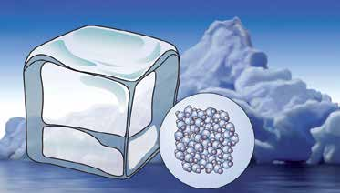
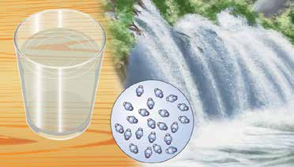
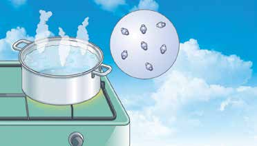
<p>UNIDAD 3</p>
<p>169</p>
<p class='muted'>Página 171</p>
<p>¿Qué diferencias observas en la forma como están unidas las moléculas</p>
<p>Nuestro</p>
<p>en los distintos estados físicos del agua?</p>
<p>planeta,</p>
<p>la Tierra</p>
<p></p>
<p></p>
<p></p>
<p></p>
<p>¿Por qué existen estos tres estados? Porque las moléculas siempre están</p>
<p>en movimiento: vibran, rotan y, a veces, pueden desplazarse. Al calentar</p>
<p>una sustancia, le damos energía y sus moléculas se pueden mover más.</p>
<p>Cuando las moléculas solamente vibran alrededor de una posición, la</p>
<p>sustancia está en estado sólido, si le agregamos calor, su movimiento</p>
<p>aumenta y la distancia entre moléculas también. Entonces, el sólido se</p>
<p>vuelve líquido. Si seguimos agregando calor, las moléculas empiezan</p>
<p>a desplazarse a grandes distancias, por consecuencia, la sustancia se</p>
<p>vuelve gas y ocupa más espacio que cuando estaba en estado sólido.</p>
<p>Realiza las actividades de la ficha &quot; Toda la materia se comprime?&quot;</p>
<p>La constitución y la apariencia física de los</p>
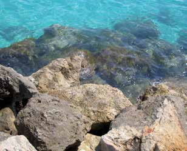
<p>Rafael Ortega Díaz. wikipedia</p>
<p>objetos y los seres vivos dependen de la</p>
<p>forma en la que están dispuestas u ordenadas</p>
<p>sus moléculas. Por ejemplo, podemos encontrar</p>
<p>diferentes objetos hechos con materiales</p>
<p>sólidos debido a sus propiedades naturales o</p>
<p>características físicas, como la apariencia, la</p>
<p>dureza, la resistencia y la textura. Por ejemplo,</p>
<p>algunas personas se dedican a clasificar rocas</p>
<p>basándose en sus características físicas.</p>
<p>Las rocas presentan</p>
<p>UNIDAD 3</p>
<p>diferentes propiedades que</p>
<p>¿Tú coleccionas algo? ¿Cómo lo clasificas?</p>
<p>permiten clasificarlas.</p>
<p>170</p>
<p class='muted'>Página 172</p>
<p>De la fuerza con la que están unidos o separados los átomos que forman</p>
<p>La</p>
<p>un compuesto o molécula, depende la resistencia de un material. Por</p>
<p>naturaleza</p>
<p>ejemplo, en una mesa de madera, las moléculas están apretadas entre sí,</p>
<p>y la</p>
<p>sociedad se</p>
<p>de manera que resiste cierta presión hasta que una fuerza mayor rompe</p>
<p>transforman</p>
<p>su estructura y la fuerza que los tiene unidos.</p>
<div class='callout'>
<p>Anota los nombres de tres materiales resistentes que conozcas</p>
<p>y los usos que se les dan.</p>
</div>
<p>Materiales</p>
<p>Usos</p>
<div class='callout'>
<p>1.</p>
</div>
<div class='callout'>
<p>2.</p>
<p>3.</p>
</div>
<p>UNIDAD 3</p>
<p>171</p>
<p class='muted'>Página 173</p>
<p>El grafito que tienen los lápices y los diamantes</p>
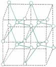
<p>Nuestro</p>
<p>está hecho del mismo elemento, el carbono. Sin</p>
<p>planeta,</p>
<p>la Tierra</p>
<p>embargo, los dos son muy diferentes en cuanto</p>
<p>a su apariencia, textura y dureza, entre otras</p>
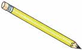
<p>propiedades. El grafito del lápiz tiene distribuidos</p>
<p>de manera irregular los átomos que lo forman,</p>
<p>lo que hace que se quiebre con facilidad. Por el</p>
<p>contrario, los átomos del carbono del diamante</p>
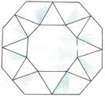
<p>están dispuestos en forma geométrica perfecta,</p>
<p>por lo que es muy difícil romperlo. Las diferencias</p>
<p>que presentan el grafito y el diamante, a pesar</p>
<p>de estar hechos del mismo elemento, se explican</p>

<p>por la forma en como están organizados sus</p>
<p>átomos.</p>
<p>ecordemos que...</p>
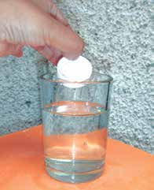
<p>Todos los objetos y seres vivos que existen en</p>
<p>la naturaleza cambian constantemente; unos</p>
<p>cambios se perciben a simple vista, otros no</p>
<p>tan fácilmente. Todo lo que se encuentra en la</p>
<p>naturaleza es materia formada por átomos, que</p>
<p>son partículas diminutas imposibles de observar</p>
<p>a simple vista. La apariencia de las cosas, su</p>
<p>resistencia y el estado físico en que se encuentran</p>
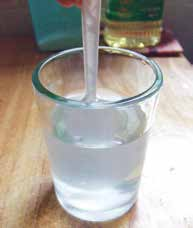
<p>(sólido, líquido o gaseoso) depende de la forma</p>
<p>en que estén organizados los átomos que los</p>
<p>forman.</p>
<p>UNIDAD 3</p>
<p>172</p>
</body></html>
